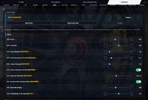

OmegaSim Wiki – die Idee dazu stammt von Gnen54. Hier stehen die offenen Artikel von Nutzer Luuke42 unter der Lizenz CC BY-SA 4.0.
NPC-Fahrverhalten
Stand dieses Artikels: OmegaSim 1.2.9 vom 26.10.2026 · Firmware des Autos: nicht bekannt (OmegaSim liest die Firmware-Version nicht aus)
Dieser Text wurde mithilfe von KI erstellt (Claude) und ist nicht in jedem Punkt von Menschen geprüft. Fehler bitte direkt verbessern oder auf der Diskussionsseite melden, siehe Mitmachen. Die öffentliche Fassung auf luuke42.github.io/omegasim kann älter sein als der hier beschriebene Stand.


Das NPC-Fahrverhalten ist die Steuerlogik, mit der OmegaSim echte Carrera HYBRID-Autos ohne menschlichen Fahrer über die Bahn bewegt. Ein solches Auto heißt in der App NPC (non-player character, computergesteuerter Gegner); im Quelltext und in älteren Fassungen hieß es „Ghost“. Jeder NPC ist ein per Bluetooth Low Energy verbundenes Auto mit der Garagenrolle NPC. Die App rechnet für ihn im selben 45-ms-Takt wie für das Fahrerauto ein Zieltempo und eine gewünschte Querlage aus Streckenlayout, Ideallinie, Rennsituation und den anderen Autos, führt beides durch ein eigenes Fahrzeugmodell und schickt das Ergebnis als Gas- und Lenkbyte an das Auto. Weil das Auto weder seine Position auf der Kachel noch seine Querlage meldet, ist fast alles daran Schätzung und Steuerung ohne Rückmeldung; die Seite beschreibt, welche Formeln und Schwellen dabei im Code stehen.
Auf einen Blick
| Merkmal | Wert |
|---|---|
| Menüpfad | Optionen → NPCs (Regler), FAHREN → Autos → Garage (Rolle, Stufe, Ton und Motor je Auto), Optionen → Ton (NPC-Motorsound) |
| Wichtigste Regler (Standard) | NPC-Tempo 55 % · Kurvendrosselung 20 % · Höchsttempo in der Haarnadel 35 % · Ideallinie 200 % · Feld zusammenhalten an, Stärke 10 % · Rennhärte 50 % |
| Stufen in der Garage | einfach 45 % · mittel 55 % (Standard) · schnell 65 % · MAX (in Arbeit) |
| Status | Grundsteuerung stabil; Stufe MAX, Haarnadel-Höchsttempo, Linienmodell SIMULATOR, NPC-Boxenstopp und NPC-Motorklang in Arbeit; Rennwürze-Zutaten, Tempo-Streuung, Startversatz experimentell |
| Seit Version | NPCs (damals „Ghosts“) seit den 0.x-Fassungen; Umbenennung in „NPC“ im Patchnotes-Abschnitt 1.0; Stufen seit 0.9.56; MAX seit 1.1.42; MAX-Motormodell seit 1.2.5 |
| Beteiligte Quelldateien | src/90-ghosts.js (Steuerung), src/61-simlinie.js (Linie SIMULATOR), src/60-track.js (Linienmodelle, Kachellängen), src/90b-sim.js (Rennen simulieren), src/80-sound.js (Regler, NPC-Klang), src/40-physics.js (Fahrzeugmodell)
|
Grundlagen
Dieser Abschnitt erklärt die Begriffe, die man für die tieferen Abschnitte braucht. Ausführlicher stehen sie im Glossar.
Was ein NPC ist
Ein NPC oder Bot ist ein Fahrzeug, das ein Programm statt eines Menschen steuert. In einem Videospiel kennt der Bot seine Position exakt, weil die Spielwelt selbst im Rechner liegt. Bei OmegaSim fährt der Bot ein echtes Modellauto auf dem Teppich. Die App „sieht“ es nur über die Funkmeldungen des Autos, und die sind spärlich.
Was das Auto meldet und was nicht
Das Auto schickt etwa alle 45 ms eine Meldung (eine Notification im Sinne von Bluetooth Low Energy). Für die NPC-Steuerung zählen zwei Bytes:
- Byte 11: ein Kachelzähler, der um eins weiterspringt, wenn das Auto auf ein neues Streckenteil fährt.
- Byte 12: der Code des gerade gelesenen Streckenteils, etwa
0x02für eine Gerade oder0x06für die Haarnadel (zur Schreibweise siehe Hexadezimalsystem;0x0Aist dezimal 10, binär00001010). Liest das Auto nichts, steht dort0x00.
Was fehlt: wo genau auf dem 43 cm langen Teil das Auto steht, wie schnell es wirklich ist und wie weit links oder rechts es fährt. Kein Byte meldet die Querlage.
Fahren ohne Ortung: Koppelnavigation
Die App schätzt deshalb den Ort wie ein Seefahrer ohne Satellitennavigation: Sie kennt den Zeitpunkt des letzten Kachelwechsels (ein echtes Ereignis) und rechnet mit dem Tempo des eigenen Fahrzeugmodells, wie weit das Auto seitdem gekommen ist. Diese Schätzung heißt Koppelnavigation (englisch dead reckoning). Beim nächsten Kachelwechsel wird sie wieder auf den gemessenen Wert gesetzt. Den Anteil des Weges über die Kachel, von 0 am Eingang bis 1 am Ausgang, nennt der Code Phase.
Regelkreis
Ein Regelkreis vergleicht einen Sollwert (wie schnell soll das Auto sein?) mit einem Istwert (wie schnell ist es?) und stellt aus der Abweichung ein Stellglied (hier Gas und Bremse). Der NPC-Tempo-Regler ist ein PI-Regler:
- Der P-Anteil (proportional) reagiert sofort und umso stärker, je größer die Abweichung ist.
- Der I-Anteil (integrierend) sammelt die Abweichung über die Zeit auf und findet so das Gas, mit dem ein Tempo dauerhaft gehalten wird.
- Ein Totband ist ein kleiner Bereich um den Sollwert, in dem der P-Anteil nichts tut, damit der Regler nicht dauernd hin und her pendelt.
- Eine Ratenbegrenzung legt fest, wie schnell sich ein Ausgang höchstens ändern darf, zum Beispiel „Gas von 0 auf voll frühestens in 0,6 s“.
Ideallinie
Die Ideallinie ist der schnellste Weg durch eine Kurve: außen anfahren, innen den Scheitelpunkt (Apex) treffen, außen herausfahren. Bei einer Carrera-Bahn ist das Besondere, dass das Auto in einer Schiene geführt wird und der Lenkbefehl die Querlage nur verschiebt. Die Linie ist deshalb in OmegaSim ein Querversatz von −1 (ganz links) bis +1 (ganz rechts) entlang der Strecke.
Zustandsmaschine
Viele Abläufe (Überholen, Boxenstopp, Parken) sind als Zustandsmaschine gebaut: Das Auto ist immer in genau einem benannten Zustand, etwa „ansage“ oder „vorbei“, und eine Bedingung (Zeit abgelaufen, Abstand erreicht) schaltet in den nächsten. Solche Abläufe stehen unten als Tabellen Zustand | Bedingung | nächster Zustand.
Anteil des Gasbytes
Alle Tempozahlen im Code (0,35, 0,55 …) sind Anteile des Gasbytes, nicht der Höchstgeschwindigkeit eines bestimmten Autos. Gesendet werden Δ = round(Anteil × 127) Gasschritte. Gemessen entspricht ein Gasschritt rund 0,0119 m/s, also 0,55 → Δ 70 → etwa 0,83 m/s.[1]
Bedienung
- Alle Autos verbinden (siehe OmegaBle). Das erste verbundene Auto wird Spieler 1, jedes weitere bekommt automatisch die Rolle NPC, sofern für dieses Auto keine andere Rolle gemerkt ist.
- Unter FAHREN → Autos → Garage für jeden NPC die Stufe wählen (einfach, mittel, schnell, MAX). Der Knopf ↻ stellt „mittel“ wieder her. Dort lassen sich auch NPC-Ton und Motor je Auto wählen.
- Ein Streckenlayout bereitstellen: im Strecken- und Raum-Editor bauen, einscannen oder beim Fahren lernen lassen (Strecke beim Fahren lernen). Ohne Layout mit mindestens drei Teilen fallen Kurvendrosselung, Ideallinie und Vorausblick weitgehend aus.
- Unter Optionen → NPCs die gewünschten Regler setzen (siehe Tabelle unten).
- Ein Rennen starten (siehe Rennarten) oder in der Garage NPCs frei fahren lassen. Die Startaufstellung wird unter Optionen → Renneinstellungen sortiert; Automatisch aufstellen lässt die NPCs selbst auf ihre Plätze fahren.
- Zum Ausprobieren ohne Autos: Optionen → NPCs → Rennen simulieren, Anzahl NPCs und Runden wählen, Simulation starten.
Einstellungen
Die Standardwerte sind die Werte, mit denen die Regler im Markup stehen; beim Laden schickt die App jedem Regler einmal sein Eingabe-Ereignis, sodass genau diese Werte wirken (ältere Anzeigetexte wie „100 %“ bei der Ideallinie waren dadurch überholt).[2]
Grundtempo und Stufen
| Name in der App | Bereich | Standard | Wirkung laut Code | Schlüssel |
|---|---|---|---|---|
| NPC-Tempo | 35–100 % | 55 % | Grundtempo ghostCfg.speed; Stufe „mittel“ fährt es auf der Geraden, alle Stufen in Kurven |
ghost-speed
|
| Stufe (Garage, je Auto) | einfach, mittel, schnell, MAX | mittel | Geradentempo = Stufenwert ÷ 0,55 × Grundtempo; MAX eigenes Profil | car.ghostStufe
|
| NPC: Tempo-Streuung | 0–10 % | 0 % | Faktor 1 + p/100 × z je Auto, z gleichverteilt in [−1; 1], nur auf Geraden | ghost-streuung
|
| NPC: Kurvendrosselung | 0–60 % | 20 % | Abzug curveSlow × Enge (Kurve 1, Haarnadel/Engstelle 2), höchstens 85 % |
ghost-curve
|
| NPC: Höchsttempo in der Haarnadel (in Arbeit) | 20–50 % | 35 % | Obergrenze in Haarnadel, Engstelle und zwei Teilen davor, gilt zuletzt | ghost-haarnadel-max
|
| MAX: Tempo auf der Geraden | 40–100 % | 100 % | Zieltempo MAX auf Geraden | ghost-max-gerade
|
| MAX: Tempo in Radius-1-Kurven | 30–100 % | 52 % | 60°-Kurve und kleine 30°-Kurve | ghost-max-r1
|
| MAX: Tempo in Radius-2-Kurven | 30–100 % | 80 % | weite 30°-Kurve | ghost-max-r2
|
| MAX: Beschleunigung | 1–4× | 2× | accelerationFactor des NPC-Modells × Wert, Schaltpause 0 ms |
ghost-max-beschl
|
| MAX: Bremspunkt | eine Schiene vor der Kurve; Beginn des Kurventeils | eine Schiene vor | bei „Schiene“ gilt schon das Tempo des nächsten Teils | ghost-max-bremspunkt
|
| NPC: Brems- und Gasverhalten | 0,3–4,0 | 4,0 | Faktor auf Verstärkungen und Ratengrenzen des Tempo-Reglers; Anzeige nennt 1/(1,6 × Wert) s bis Vollgas | ghost-gasdyn
|
Linie und Querlage
| Name in der App | Bereich | Standard | Wirkung laut Code | Schlüssel |
|---|---|---|---|---|
| NPC: Ideallinie | 0–200 % | 200 % | Gewicht des Linienversatzes; über 100 % wächst sein Anteil auf der Geraden von 35 % bis 100 % | ghost-line
|
| NPC: Kurven öffnen | 0–100 % | 0 % | Schranke für die Linienoptimierung: wie weit außen angefahren und verlassen wird | ghost-exit
|
| NPC: Linienmodell | Krümmung, Rundenzeit, Late Apex, 3-stufig, Fahrbahnmitte, Innen (gemittelt), Außen-Innen, Luuke-Linie, SIMULATOR | SIMULATOR | Zielfunktion der Linie; SIMULATOR sucht durch Probefahrten | lineModel
|
| NPC: Querträgheit | 0,2–4,0 | 4,0 | Höchste Änderung der Querlage in Bahnbreiten je Sekunde | ghost-quertempo
|
| NPC: seitlicher Versatz | 0–200 % | 200 % | Ausweichen nebeneinander (× 0,25) und Seite beim Überholen (× 0,8, höchstens 1) | ghost-lateral
|
| NPC: eigene Spuren | 0–200 % | 100 % | feste Spur ±0,16 je Auto ab zwei NPCs; in Kurven halbiert bis 100 % | ghost-lanes
|
| NPC: Zu zweit in Kurven innen/Mitte | an/aus | an | nebeneinander: passende Seite innen (0,8), andere Mitte | ghost-paar-kurve
|
| NPC: Querlage festhalten (Prüfstand) | −1 bis +1 | aus (0) | fester Wert direkt auf Byte 7, am Servoweg vorbei | ghost-quer-test
|
| NPC: lernt von Runde zu Runde | an/aus | aus | Zufallssuche auf Tempo- und Linienfaktor je Runde | ghost-learn-pace
|
| Strecke beim Fahren lernen | an/aus | aus | Layout aus den gemeldeten Codes nach der ersten geschlossenen Runde | ghost-learn
|
| NPC braucht Streckencode | an/aus | aus | an: ohne gelesenen Code und ohne laufenden Zähler wird geparkt | ghost-needcode
|
Feld, Rennwürze und Start
| Name in der App | Bereich | Standard | Wirkung laut Code | Schlüssel |
|---|---|---|---|---|
| NPC: Feld zusammenhalten | an/aus | an | Feld-Staffel über alle Plätze, ab zwei NPCs | ghost-leader
|
| NPC: Stärke der Staffel | 0–30 % | 10 % | Erster × (1 − Wert), Letzter × (1 + Wert) | ghost-leader-pct
|
| NPC: Rennhärte | 0–100 % | 50 % | setzt fünf Überholgrößen gleichzeitig (Formel unten) | ghost-hardness
|
| NPC: Feld auffächern | 0–100 % | 0 % | Reichweiten für Windschatten und Angriff × (1 + Wert/100) | ghost-feld
|
| NPC: Überholmanöver je Runde | 0–1 | 0,1 | Guthaben je Runde und je vier Autos im Rennen | ghost-ueber
|
| Rennwürze: Überholmanöver | an/aus | an | Vier-Phasen-Manöver | ghost-w-pass
|
| Rennwürze: Abstand halten | an/aus | an | Zeitlücke mindestens 1,2 s | ghost-w-gap
|
| Rennwürze: Tagesform | an/aus | aus | Zufallslauf ±7,5 %, Schritt ±3 % alle 2,6 s | ghost-w-form
|
| Rennwürze: Fahrfehler | an/aus | aus | 5,5 % je angebremster Kurve, 0,42–0,9 s mit −45 % Tempo | ghost-w-fehler
|
| Rennwürze: Windschatten | an/aus | aus | bis +11 % auf der Geraden bis 1,3 Kacheln | ghost-w-slip
|
| Rennwürze: Verteidigen | an/aus | aus | Vorausfahrender deckt mit 50 % | ghost-w-defend
|
| Rennwürze: Blaue Flagge | an/aus | aus | Überrundeter lupft 12 % und weicht 1,6 s aus | ghost-w-blau
|
| Rennwürze: Fahrercharakter | an/aus | aus | vier Faktoren je Auto in 1 ± 0,25, Boxenfenster ±2 Runden | ghost-charakter
|
| Rennwürze: Startreaktion | an/aus | aus | Reaktion 80–300 ms, dann 2,5 s mit 85 % | ghost-w-start
|
| NPC: Start je Startreihe versetzt | an/aus | an | Reihe = floor(Startplatz/2), Wartezeit Reihe × Versatz | ghost-staffel
|
| NPC: Versatz je Startreihe | 50–600 ms | 250 ms | Wartezeit je Zweierreihe | ghost-staffel-ms
|
Abgang und Rückweg
| Name in der App | Bereich | Standard | Wirkung laut Code | Schlüssel |
|---|---|---|---|---|
| NPC: Rückweg nach einem Abgang | an/aus | aus | statt sofort zu parken bis 3 s weiterfahren | ghost-w-recovery
|
| NPC: Rückweg mit Lenkung (experimentell) | an/aus | aus | Rangieren zur Kurveninnenseite bis 4,5 s; nie beim Safety Car | ghost-w-recovery-lenk
|
| NPC: Rückweg Zurücksetzen | 0–600 ms | 250 ms | Rückwärtsschub vor jedem Versuch | ghost-rw-zurueck-ms
|
| NPC: Rückweg Lenkimpuls | 200–1200 ms | 600 ms | Räder voll innen, vorwärts | ghost-rw-lenk-ms
|
| NPC: Rückweg weich | 0–100 % | 0 % | Rampen und Pause bis 1 s | ghost-rw-weich
|
| NPC: Rückweg, Wartezeit vor dem 1. Versuch | 0–5000 ms | 1000 ms | erst so lange normal weiterfahren | ghost-rw-warte-ms
|
| NPC: Rückweg Tempo | 25–100 % | 50 % | Gasgrenze mit eingeschlagenen Rädern | ghost-rw-tempo
|
| NPC: Rückweg, Pause zwischen den Versuchen | 300–2000 ms | 300 ms | normale Spurführung zwischen zwei Versuchen | ghost-rw-pause-ms
|
Boxenstopp, Ton und Simulation
| Name in der App | Bereich | Standard | Wirkung laut Code | Schlüssel |
|---|---|---|---|---|
| NPC: Boxenstopp (experimentell) | an/aus | aus | NPCs fahren je nach Fälligkeit an die Box | ghost-pit
|
| NPC: Boxenstopp im freien Fahren | an/aus | an | erlaubt Stopps außerhalb von Rennen | ghost-pit-free
|
| NPC: Boxenstopp-Länge | 3–10 s | 5 s | Standzeit (plus Rammstrafe) | ghost-pit-sec
|
| NPC: Boxenstopp frühestens nach | 2–20 Runden | 5 | untere Grenze des Fälligkeitsbandes | ghost-pit-min
|
| NPC: Boxenstopp spätestens nach | 2–20 Runden | 9 | obere Grenze; wird nie kleiner als „frühestens“ | ghost-pit-max
|
| NPC-Motorsound (Optionen → Ton) | an/aus | aus | Motorstimme je NPC, 40 % leiser als das Fahrerauto | ghost-sound
|
| NPC-Motorklang: alt | an/aus | aus | an: alte, leisere Knaller nur beim Gaswegnehmen | setting-npc-klang-alt
|
| NPC-Motor (Garage) | „wie Spieler 1“ oder ein Motor mit Aufnahmen | wie Spieler 1 | Klang je Auto | ghost-motor, car.ghostMotor
|
| Rennen simulieren: Anzahl NPCs | 2–6 | 4 | Attrappen in der Garage | sim-ghosts
|
| Rennen simulieren: Anzahl Runden | 1, 2, 3, 5, 10 | 3 | Renndauer | sim-laps
|
| Rennen simulieren: Doppelte Geschwindigkeit | an/aus | aus | Abspielen ×2, Rundenzeiten bleiben | sim-fast
|
Funktionsweise
Ablauf eines Takts: ghostTick
ghostTick(car) läuft für jeden NPC einmal je Sendetakt (45 ms).[3] Der Ablauf, gekürzt auf die tragenden Schritte:
- Zeitschritt dt aus der Uhr, höchstens 0,25 s. Läuft der Zieleinlauf, übernimmt
ghostFinishTickund der Takt endet hier. - Sonderrollen: Safety Car (Neustart, Heimweg) und Reinigungswagen bekommen ihren Zusatztick (siehe Safety Car und Reinigungswagen).
- Weg integrieren:
kachelWeg += |Tempo| × KMH_TO_UNITS × dtaus dem Modelltempo. - Motor einstellen:
ghostMaxMotor(Rückschaltdrehzahl, MAX-Beschleunigung) und Reifengriff je Wetter. - Kachelwechsel? Hat Byte 11 gewechselt, werden Dauer und Weg der verlassenen Kachel gelernt,
tileIndexerhöht, bei Index 0 eine Runde gezählt (und der Lernschritt bewertet), Ort abgeglichen und die Fälligkeit des Boxenstopps geprüft. - Boxen- und Randhalt-Zustandsmaschinen weiterschalten (
pitTick,randHaltTick). - Abgang prüfen: liest das Auto
0x00länger als die Schwelle (Gerade 900 ms, Kurve 1200 ms, Haarnadel 1800 ms, in der Aufstellung doppelt) oder zählt es unplausibel schnell weiter (Kachelmittel unter 250 ms, dann schon nach 300 ms), wird es geparkt oder der Rückweg versucht. Meldet ein Auto bei Zieltempo über 0,2 drei Sekunden lang gar nichts Neues, gilt es als „stumm“ und wird ebenfalls geparkt. - Zieltempo berechnen (nächster Abschnitt).
- Tempo-Regler (PI) liefert Gas und Bremse, dazu Vorsteuerung aus dem Bremsprofil und, beim Boxenstopp, Vollbremsung am Regler vorbei.
- Querlage berechnen und ratenbegrenzen.
- Fahrzeugmodell mit Lenkung, Gas und Bremse einen Schritt rechnen; daraus kommen Servowinkel und Motor-PWM.
- Lichter setzen (Lichthupe beim Überholen, Doppelblitz an der Box, Blinken unter Gelb) und das Paket mit
writeToCarsenden. Im Leitplanken-Modus kommen in Byte 16 bis 18 die Codes der nächsten drei Teile mit.
Zieltempo je Kachel: die Kette
Das Zieltempo entsteht als Produkt mehrerer Faktoren, danach greifen Böden und Deckel in fester Reihenfolge:[4]
v0 = Stufe(Kachel) (ghostStufeFaktor) v1 = v0 × Lernfaktor.pace × Streuung (nicht bei MAX) v2 = Gelb: min(v1, Gelbziel) × Abstand (nur unter Gelb, siehe Safety-Car-Seite) v3 = v2 × Würze.faktor × Reihe (Würze vor einer Haarnadel höchstens 1) v4 = v3 × (1 − A) A = max(A_Profil, A_Kachel), nicht bei MAX außerhalb der Haarnadel v5 = min(v4, Grundtempo × (1 − A)) nur wenn A > 0 v6 = v5 × 0,95 nur in Kurven mit nahem Nachbarn v7 = v6 × Staffel × Reifen Staffel vor Haarnadel höchstens 1 v8 = Einführungsrunde, Aufstellung, Startversatz, Startreaktion, Anfahrrampe v9 = max(v8, min(0,37, Grundtempo)) Mindesttempo (GHOST_FAHR_MIN) v10 = min(v9, Haarnadel-Höchsttempo) in Haarnadel, Engstelle und 2 Teilen davor v11 = Boxen- und Randhalt-Ziel überschreibt alles
Die Größen im Einzelnen:
- Stufe(Kachel): Auf einer Geraden ist sie Stufenwert ÷ 0,55 × Grundtempo (bei Grundtempo 0,55 also genau 0,45, 0,55 oder 0,65); steht das Auto auf einem Kurvencode, gilt für alle Stufen das Grundtempo. Für MAX liefert
ghostMaxTempoden Reglerwert der Teilart (Gerade, Radius 1, Radius 2, Haarnadel) unter dem Auto; beim Bremspunkt „Schiene“ das Minimum aus diesem und dem nächsten Teil, begrenzt auf 0,05 bis 1. - Lernfaktor
pace: 1, solange das Lernen aus ist; sonst 0,75 bis 1,30 (siehe unten). - Streuung: 1 + p/100 × z mit z zufällig in [−1; 1] je Auto und Start; nur auf Geraden.
- Würze: Produkt aus Tagesform, Fahrfehler, Windschatten, Angriffsschub, Blaue-Flagge-Abschlag und Abstandhalter (siehe Überholmodell).
- A_Kachel = min(0,85; curveSlow × Charakter.kurvenAbzug × Enge). Die Enge ist das Maximum aus dem Teil unter dem Auto und dem engsten Teil in Reichweite: vor einer normalen Kurve ein Teil, vor Haarnadel oder Engstelle zwei Teile. Haarnadel und Engstelle zählen doppelt (Enge 2).
- A_Profil = min(0,85; 2 × curveSlow × Charakter.kurvenAbzug × bd), wobei bd der Bremsbedarf der berechneten Linie an der aktuellen Stelle ist (0 bis 1). Er ist stetig und sitzt an der richtigen Stelle innerhalb der Kachel. Es gilt das Maximum beider Abzüge, nicht die Summe: zwei Abzüge für dieselbe Sache würden das Auto zum Stehen bringen.
- Deckel v5: damit alle Stufen gleich schnell in die Kurve gehen, wird vor und in Kurven auf Grundtempo × (1 − A) begrenzt. Ohne ihn käme ein schneller NPC mit 0,65 × 0,8 = 0,52 statt 0,44 in die Kurve.
- Staffel siehe nächster Abschnitt; unter Gelb, in der Einführungsrunde und für MAX auf reinen Geraden (Enge 0) gleich 1.
- Reifen: basis × √(Griff ÷ Griff der passenden Mischung), basis = 1 + (0,85 − 1) × Nässe², mit der Grifftabelle trocken (Slick 1,00 / Regenreifen 0,88) und nass (Slick 0,45 / Regenreifen 0,80). Trocken mit Slicks ergibt genau 1.
- Mindesttempo 0,37 (Δ 47), aber nie über dem eingestellten Grundtempo; nicht bei Randhalt, Box, Anfahrrampe, Einführungsrunde und Aufstellung. Liest das Auto 250 bis 700 ms lang
0x00, hebt ein kurzer Lese-Schub auf 0,40.[5] - Haarnadel-Höchsttempo gilt zuletzt und damit auch über dem Mindesttempo: in der Haarnadel endet jede Kette bei höchstens 0,35.[6]
Die Gründe für die Reihenfolge stehen im Code: Die Staffel stand früher hinter dem Abstandhalter und multiplizierte dessen Abzug weg, sodass ein Auto, das gerade Abstand hielt, als Letzter wieder hochgezogen wurde und auffuhr. Deshalb darf sie, solange der Abstandhalter greift, nur noch bremsen.
Die Stufen und MAX im Detail
| Stufe | Gerade | 60°-Kurve (Enge 1) | Haarnadel (Enge 2) |
|---|---|---|---|
| einfach | 0,45 | 0,44 | 0,35 |
| mittel | 0,55 | 0,44 | 0,35 |
| schnell | 0,65 | 0,44 | 0,35 |
| MAX (Standardregler) | 1,00 | 0,52 | 0,35 |
Werte bei Grundtempo 55 %, Kurvendrosselung 20 %, ohne Würze, Staffel 1. In der Haarnadel wäre die Rechnung 0,55 × (1 − 0,4) = 0,33, das Mindesttempo hebt auf 0,37, das Haarnadel-Höchsttempo senkt auf 0,35.
MAX-Motormodell (seit 1.2.5). Das Fahrzeugmodell eines NPCs ist eine Kopie der Abstimmung von Spieler 1 (ohne Tankgewicht, Reifenverschleiß, Lenkexpo und Tempo-Lenkbegrenzung, immer Automatik). Das gesendete Gas ist der Tempoanteil dieses Modells. Auf einer 43-cm-Geraden, die bei diesen Tempi 0,3 bis 0,5 s dauert, kam ein MAX-NPC damit kaum über 0,5, weil der Schub mit dem Tempo fällt und jedes Hochschalten 120 ms ohne Antrieb kostet. ghostMaxMotor setzt deshalb für MAX:
// src/90-ghosts.js, ghostMaxMotor()
e.config.downshiftRpm = NPC_RUECKSCHALT_RPM; // 5200/min, für alle NPCs
if (ghostIstMax(car)) {
e.config.accelerationFactor = g.basisBeschl * (ghostCfg.maxBeschl || 1);
e.config.shiftMs = 0; // keine Schaltpause
} else {
e.config.accelerationFactor = g.basisBeschl; // zurück auf die Kopie
e.config.shiftMs = g.basisShiftMs;
}
Für MAX gelten außerhalb der Haarnadel weder Kurvenabzug noch der Deckel auf das Grundtempo, und Lernfaktor, Streuung und (auf Geraden) die Staffel nehmen ihm kein Tempo. Haarnadel, Engstelle und die zwei Teile davor, Mindesttempo, gelbe Flagge und Einführungsrunde gelten unverändert. Beim Bremspunkt „Beginn des Kurventeils“ wechselt das Zieltempo erst, wenn das Auto auf dem Kurvencode ist.
Feld-Staffel
ghostFeldStaffel sortiert alle laufenden NPCs nach ihrem geschätzten Gesamtfortschritt (vorn zuerst) und gibt jedem Platz einen Faktor:[7]
lage = 2 × platz / (n − 1) − 1 (−1 für den Ersten, +1 für den Letzten) Staffel = 1 + leaderBrakePct × lage
- platz: 0 für den Führenden, n − 1 für den Letzten
- n: Zahl der laufenden NPCs (ab zwei; bei einem gibt es 1)
- leaderBrakePct: Regler „Stärke der Staffel“, Standard 0,10
Bei drei NPCs und 10 % fährt der Erste mit 0,90, der Zweite mit 1,00, der Dritte mit 1,10. Das mittlere Tempo des Feldes bleibt gleich, deshalb ist es kein versteckter Langsamer-Schalter.
Tempo-Regler
ghostSpeedControl(g, ziel, v, dt) mit v = Modelltempo ÷ Höchsttempo:[8]
e = ziel − v I_neu = clamp(I + e × 1,2 × dt, 0, 1) wenn |e| < 0,015: Gas_roh = I_neu, Bremse_roh = 0 sonst: Gas_roh = clamp(I_neu + e × 2,2 × d), Bremse_roh = clamp(−e × 3,0 × d) wenn Bremse_roh > 0,02: I_neu = I × (1 − min(1, 3,0 × dt)) (Anti-Windup 1) sonst wenn Gas_roh = 1 und e > 0: I_neu = I (Anti-Windup 2) Gas = Rate(Gas_alt → Gas_roh, höchstens 1,6 × d × dt je Takt) Bremse = Rate(Bremse_alt → Bremse_roh, höchstens 4,0 × d × dt je Takt)
- d: Regler „Brems- und Gasverhalten“ (
gasDynamik, Standard 4,0, mindestens 0,1) - 0,015: Totband (
GHOST_DEADBAND), 2,2 und 3,0: Verstärkungen für Gas und Bremse, 1,2/s: I-Verstärkung, 3,0/s: Abbau des I-Anteils beim Bremsen, 1,6/s und 4,0/s: Ratengrenzen
Der I-Anteil bleibt im Totband stehen. Vorher fiel das Auto im Totband auf null Gas und erzeugte einen Sägezahn um den Sollwert. Bremsen ist absichtlich entschlossener als Gasgeben.
Zusätzlich gibt es eine Vorsteuerung: Ist das Auto schneller als ziel + 0,015 und meldet die Linie Bremsbedarf bd, gilt mindestens Bremse = min(1; bd × curveSlow × 1,5), und bei Bremse über 0,02 wird das Gas auf null gesetzt.
Ideallinie, Phase und Querlage
Woher die Linie kommt. Mit einem Layout ab drei Teilen rechnet ghostLine() aus der Mittellinie (rund 180 Abtastpunkte je Strecke) eine Linie als Querversatz α je Punkt, dazu ein Bremsprofil. Gewählt wird sie über das Linienmodell; dieselbe Linie zeichnet der Strecken- und Raum-Editor. Das Modell SIMULATOR (seit 1.0.14) fährt zuerst die acht anderen Linien als Saat und dann Abwandlungen davon (eine weiche „Beule“ mit Kosinusprofil über 6, 10 oder 18 Punkte, oder eine gerade „Sehne“ über 8 bis 41 Punkte), jeweils drei Runden mit einer stummen Instanz desselben Fahrzeugmodells, gewertet werden Runde 2 und 3. Die sechs besten bleiben im Pool; nach höchstens 200 Auswertungen gilt die schnellste. Die Suche pausiert im Rennen, wird je Strecke und Fahrgrenzen gespeichert, und bis sie fertig ist, gilt die Luuke-Linie.[9]
Phase auf der Kachel. Der Linienwert wird über (Kachel, Phase) nachgeschlagen. Die Phase kommt bevorzugt aus dem Weg:
Phase_Weg = clamp(kachelWeg / Weg_soll(Typ), 0, 1) Phase_Zeit = clamp((jetzt − Kachelbeginn) / Dauer(Typ), 0, 1) (Rückfall)
Weg_soll und Dauer sind gleitende Mittelwerte je Kacheltyp mit Gewicht 0,3 für den neuen Wert (neu = 0,7 × alt + 0,3 × Messung). Eine Dauer zählt nur zwischen 250 und 4000 ms, ein Weg nur zwischen dem 0,4- und 2,5-Fachen der geometrischen Kachellänge, und genutzt wird ein Typ erst ab zwei Messungen; vorher gilt das Gesamtmittel (Vorgabe 800 ms) × Länge des Typs ÷ mittlere Kachellänge.[10] Der Weg ist selbstkalibrierend: Ein konstanter Skalenfehler im Modelltempo kürzt sich in Weg ÷ erwartetem Weg heraus. Gemessen gegen die wahre Phase der Rennsimulation sank der mittlere Fehler von 0,097 (Uhr) auf 0,073 (Weg), und der Anteil der Takte, in denen die Phase am Deckel 1 klebte, von 6,2 % auf 0.[11]
Ohne Layout gibt ghostLineFromCode eine Dreiecksform je Kurvenkachel:
apex = 0,62 (Haarnadel) bzw. 0,5 (sonst) L(ph) = −dir + 2·dir·ph/apex für ph < apex L(ph) = dir − 2·dir·(ph − apex)/(1 − apex) sonst
dir ist +1 in Rechtskurven und −1 in Linkskurven, +dir ist innen. Bei ph = 0 steht das Auto außen (−dir), im Scheitel innen (+dir), am Ausgang wieder außen.
Gewünschte Querlage. Im Leitplanken-Modus (Standard) gilt die erste zutreffende Quelle:
- Rückweg, Box, Vorbeifahrt am Safety Car oder Aufstellung (fester Wert),
- unter Gelb 0 (mittig),
- beim Überholen oder Ausweichen die Seite × min(1; seitlicher Versatz × 0,8),
- zu zweit in einer Kurve die Paarvorgabe (0,8 innen, 0 Mitte),
- sonst die Ideallinie: L × Ideallinie × G_Linie × (0,15, wenn das Auto gerade jemandem ausweicht, sonst 1).
Dazu kommen Ausweichverteilung (bias × seitlicher Versatz × 0,25), eigene Spur (±1 × Spuren × 0,16 × G_Spur) und beim Fahrfehler 0,35 nach außen. Die Gewichte hängen von der „Kurvenmischung“ m ab (0 Gerade, 1 Kurve, mit 350 ms Nachlauf):
ü(x) = clamp(x − 1, 0, 1) G_Linie = g + (1 − g)·m mit g = 0,35 + 0,65·ü(Ideallinie) G_Spur = 1 − 0,5·(1 − ü(Spuren))·m
Bei Ideallinie 200 % ist g = 1: Die Linie wirkt auch auf der Geraden voll.
Querträgheit und querSoll. Die Summe wird ratenbegrenzt, und zwar abhängig vom Tempo, weil ein stehendes Auto nicht zur Seite rückt:
tempoAnteil = min(1, v / 0,35) querMax = Querträgheit × dt × tempoAnteil (Bahnbreiten je Takt) querIst = querIst_alt ± höchstens querMax querSoll = querSoll + (querRoh − querSoll) × (1 − 0,75^(dt/0,045)) × tempoAnteil
querIst geht als Lenkwunsch ins Fahrzeugmodell; querSoll ist die Schätzung, wo das Auto tatsächlich steht. Andere Autos lesen sie, um ihre Überholseite zu wählen. Sie ist eine Modellgröße, keine Messung.[12]
Messungen aus der Technik-Dokumentation: Das Auto liest die Schiene auch bei vollem Lenkanschlag (in 67 830 Meldungen mit Code vier Abrisse, alle bei kleineren Lenkwerten). Für die Form der Linie ist 100 % am besten (Spanne des Lenkbytes in Kurven 55 von 127); bei 200 % wird das Auto schräger (Mittel 106 statt 89), aber die Linie flacher (Spanne 36), weil 39 % der Anforderung am Anschlag abgeschnitten werden.[13]
Überholmodell
Ein Angriff ist eine Zustandsmaschine in ghostSpice():[14]
| Zustand | Querversatz | Bedingung | nächster Zustand |
|---|---|---|---|
| (frei) | Ideallinie | Vordermann ≤ Reichweite (1,3 Kacheln), seit 900 ms dicht, Würfelwurf alle 1200 ms mit p = 0,45 trifft, alle Sperren frei | ansage |
| ansage | 0 | 570 ms vorbei (zwei Lichthupen: 220 ms an, 130 ms aus) | raus |
| raus | volle Seite | 400 ms vorbei | vorbei |
| vorbei | volle Seite, Tempo × 1,07 | eigener Fortschritt > Fortschritt des Ziels + 0,45 Kacheln | rein |
| raus/vorbei | – | Ziel steht auf der Angriffsseite (Querlage ≥ 0,30): einmal Seite wechseln, falls frei, sonst Abbruch | raus (neu) oder frei + 6 s Sperre |
| raus/vorbei | – | 5 s ohne Erfolg | frei + 6 s Sperre |
| rein | linear von Seite auf 0 | 700 ms vorbei | frei |
Sperren: kein Angriff in der Einführungsrunde, unter Gelb, auf das Safety Car, mit Haarnadel oder Engstelle in den nächsten vier Teilen, ohne freie Seite (ein naher Nachbar mit Querlage ≥ 0,30 belegt seine Seite), wenn schon zu viele angreifen (höchstens max(1; ⌊Autos/4⌋) gleichzeitig) und im Rennen ohne Überholguthaben. Das Safety Car greift nie an.
Seitenwahl: die Seite, auf der der Vordermann laut seiner geschätzten Querlage nicht ist; sind beide frei, die Innenseite der nächsten Kurve in vier Teilen. Der Angreifer schreibt dem Vordermann einen Ausweichauftrag (andere Seite, 2600 ms). Mit „Verteidigen“ deckt dieser in 50 % der Fälle (× Charakter.verteidigung) stattdessen dieselbe Seite; Überrundete verteidigen nicht. Während des Manövers ersetzt der Versatz die Ideallinie, statt sich zu ihr zu addieren; vorher hoben sich die Kräfte auf und die Autos schoben sich „ewig gegenseitig an“.
Überholguthaben: Alle 200 ms wächst ein gemeinsames Konto um Rate × (Autos/4) × d, wobei d der Zuwachs des mittleren Rundenfortschritts ist (gedeckelt 0,5); das Konto ist auf 1,5 begrenzt, jeder Angriff kostet 1. Bei Standardrate 0,1 und vier Autos gibt es so etwa alle zehn Runden einen Angriff im Feld.
Rennhärte setzt fünf Größen aus einem Wert i = Regler/100:
zu = i / 0,5 (0 … 2) von = 1,5 − i (1,5 … 0,5) p_Angriff = 0,45 × zu Wartezeit vor Angriff = 900 ms × von Zeitlücke = 1,2 s × von Abstand (Rückfall) = 1,2 Kacheln × von Reichweite = 1,3 Kacheln × von
Abstand halten rechnet mit der Zeitlücke zum Vordermann (Differenz der Zeitstempel, zu denen beide dieselbe Kachel erreichten, höchstens 5 s):
nötig = 1,2 s + 0,30 × max(0, Annäherung) wenn Lücke < nötig: Würze × (1 − 0,26 × (1 − Lücke/nötig))
Die Annäherung ist die geglättete Abnahme des Kachelabstands je Sekunde (Glättung 0,3). Fehlt die Zeitlücke, gilt derselbe Ausdruck in Kacheln mit 1,2 Kacheln und 0,5 je Kachel/s. Der Wert 1,2 s ist gemessen gewählt: Bei 0,35 s waren die Autos 86 % der Zeit in Berührung, bei 1,2 s 61 %, bei 13 % weniger Überholmanövern.
Die weiteren Würz-Zutaten: Windschatten × (1 + 0,11 × (1 − Abstand ÷ (1,3 × Auffächern))) nur auf Geraden; Fahrfehler mit Wahrscheinlichkeit 0,055 × Charakter × (1 + 0,8 × Nässe) × (1,5 bei falschen Reifen) × (1,3 mit Verfolger in 1,6 Kacheln), einmal je Kurve gewürfelt; Blaue Flagge × 0,88 und Ausweichen nach außen für 1600 ms, wenn ein Auto mit mehr Runden innerhalb 1,6 Kacheln folgt; Tagesform als Zufallslauf. Vor und in einer Haarnadel (vier Teile Sicht) darf die Würze nur bremsen.
Ausweichen, Paare und Reihen
- Ausweichverteilung (
ghostAssignBias, alle 200 ms): Autos, deren Abstand höchstens 0,6 s beträgt, bilden Gruppen; jede Gruppe wird nach aktueller Querlage sortiert und gleichmäßig über die Breite verteilt (bei zwei −1/+1, bei drei −1/0/+1). Der Zielwert wird in Schritten von 0,25 je 200 ms angefahren. - Paare (seit 1.0.31): Zwei Autos in höchstens 1,0 Kachel Abstand (lösen ab 1,4) fahren links/rechts mit 0,9, in der Kurve außen nur 0,55, nicht in Haarnadelzonen und nur bei Grün.
- Reihe: hinter einem fremden Paar und vor der Haarnadel fährt man hintereinander (Abstand 1,0 Kachel, Faktor bis 0,6).
Lernen von Runde zu Runde
Mit „lernt von Runde zu Runde“ führt jedes Auto eine einfache Zufallssuche (eine (1+1)-Evolutionsstrategie):[15]
w = (U1 + U2)/2, U gleichverteilt in [−1; 1] (Dreiecksverteilung) pace' = clamp(pace + w·σ, 0,75, 1,30) push' = clamp(push + w·σ, 0,40, 1,25) Runde schneller und ohne Abgang: übernehmen, σ × 1,15 (höchstens 0,10) Runde langsamer: verwerfen, σ × 0,9 (mindestens 0,012) Abgang: verwerfen, pace × 0,97, push × 0,95, σ × 0,6
σ beginnt bei 0,055. pace multipliziert das Zieltempo, push den Linienversatz. Zusätzlich deckelt eine Lenkgrenze aus den Messungen des Querablage-Prüfstands den Linienwert (ohne Messung 1,0).
Bremspunkt, Kurvendrosselung und Haarnadel
- Kurvendrosselung: siehe A_Kachel; vor einer 60°-Kurve ab einem Teil, vor Haarnadel/Engstelle ab zwei Teilen.
- Bremsprofil: A_Profil und Vorsteuerung aus der Linie, stetig innerhalb der Kachel.
- Kein fester Bremspunkt: Ein Bremspunkt nach der Lehrbuchformel a = (v² − v_Ziel²)/(2s) wurde gebaut und verworfen. Der nötige Bremsweg liegt bei 1,4 bis 2,0 cm, also rund 4 % einer 43-cm-Kachel; er fällt immer in den Takt, in dem der Regler ohnehin bremst. Rundenzeit 16,227 gegen 16,240 s, im Rauschen.[16]
- Haarnadel-Höchsttempo: 0,35 in Haarnadel, Engstelle und den zwei Teilen davor, als letzte Grenze (seit 1.1.37). Die alte Grenze (0,55 × 0,6 = 0,33) wurde vom Mindesttempo 0,37 überstimmt; „Die NPCs fliegen mir in der Haarnadel alle paar Runden raus“ war die Meldung dazu.
- MAX-Bremspunkt: siehe oben.
Startaufstellung und Start
Startplätze. aufstellZielOrt(platz) rechnet einen Ort in Kacheln (Ganzzahl = Teil, Rest = Anteil) relativ zum ersten Start/Ziel-Teil s:
Ort(k) = s − 1 + Seite(k) − ⌊k/2⌋ × 0,5 Seite(k) = 0,15 (rechts, gerade k) bzw. 0,0 (links, ungerade k)
Fällt ein Platz in Haarnadel oder Engstelle, rücken er und alle dahinter um ganze Teile zurück. So stehen zwei Autos je Reihe, jede Reihe eine halbe Kachel hinter der vorigen, ab Reihe 2 vier Autos je Teil. Die NPCs fahren mittig im Aufstelltempo (Formationstempo 0,35, in Kurven × 0,9, in Haarnadeln × 0,8, Boden 0,28) und parken mit der aufgenommenen Einparkfolge des Safety Cars, für linke Plätze gespiegelt und mit 70 % ihres Gases (Renneinstellung „Einparken: Gas der Safety-Car-Folge“). Autos innerhalb von zwei Kacheln starten im Abstand von 500 ms; Zeitgrenze 60 s plus 500 ms je Auto.[17]
Start. Mit „Start je Startreihe versetzt“ wartet Reihe r = ⌊Startplatz/2⌋ ab Grün r × 250 ms. Mit „Startreaktion“ kommt je Auto eine zufällige Reaktionszeit von 80 bis 300 ms dazu und für die folgenden 2,5 s ein Faktor 0,85. In den ersten 600 ms nach dem Scharfschalten bleibt die Lenkung gerade, und drei Sekunden lang verhindert eine „Gnade“, dass das Anrollen als Abgang zählt.
Nach dem Rennen. Auf der Bahn mit Layout fahren die NPCs zurück in die Startaufstellung: Platz = Zahl der menschlichen Fahrer + Reihenfolge des Zieleinlaufs. Ohne diese Bedingungen rollen sie aus: der Erste min(5; n − 1 − Platz) Kacheln weit, mindestens 700 ms, höchstens 4000 ms, abwechselnd links und rechts am Rand, dann 450 ms Bremse und dreimal Blinken.
NPC-Boxenstopp (in Arbeit)
Fälligkeit. Nach jedem Stopp zieht der NPC
fällig = Runden + max(1, lo + Zufall(0 … hi − lo) + Charakter.pitVersatz)
mit lo = „frühestens“, hi = „spätestens“. Außerdem kommt er herein, wenn seine Reifen nicht zum Wetter passen. Es gibt genau einen Boxenplatz (PIT_PLAETZE_MAX = 1); wer gleichzeitig fällig ist, wartet.
Lage der Box. Ohne verbundenes Safety Car ist es das erste Start/Ziel-Teil. Mit Safety Car ist es das erste Teil i, das mindestens drei Teile hinter dessen Parkplatz liegt und bei dem i und i + 1 Geraden sind (sonst Parkplatz + 3).[18]
| Zustand | Bedingung | nächster Zustand |
|---|---|---|
| (fahren) | auf dem Teil vor der Box, fällig, erlaubt (Grün, keine Einführungsrunde, Platz frei) | anfahrt |
| anfahrt (Formationstempo 0,35) | Teil der Box erreicht | einparken |
| einparken (Safety-Car-Folge, 300 ms Angleichen) | Folge zu Ende | stand |
| stand (Ratsche, Gas 0) | Standzeit + Rammstrafe vorbei; Reifen werden gewechselt | raus |
| raus (Ausparkfolge, Anfahrrampe 2,5 s) | Folge zu Ende | (fahren), neue Fälligkeit |
Die anderen NPCs weichen auf der Boxenkachel und dem Teil davor nach links aus (400 ms, laufend erneuert), ihre Querlage ist dort nach rechts gesperrt. Während des ganzen Stopps wird die Abgang-Gnade laufend erneuert, sonst würde der stehende NPC nach etwa vier Sekunden als „Bahn verlassen“ geparkt. NPCs haben keinen Reifenverschleiß und kein Tankmodell; ihr Reifengriff hängt nur am Wetter (siehe Verschleiß).
Funklast
Mehrere NPCs teilen sich ein Budget von 30 Paketen je Sekunde:
Abstand = max(45 ms, round(1000 × n / 30)) − 5 ms (n ≥ 2 laufende NPCs) unveränderter Befehl: höchstens alle max(Abstand, 200 ms)
Ein Halt (Gas 0) und Einparkfolgen gehen sofort und im vollen Takt. Spieler-Autos sind davon nicht betroffen.[19]
Klang
Mit NPC-Motorsound bekommt jeder laufende NPC eine eigene Motorstimme auf einer eigenen Stereoseite, 40 % leiser als das Fahrerauto (GHOST_LEISE = 0.6). Drehzahl und Last kommen aus seinem Fahrzeugmodell. Seit 1.2.5 schalten alle NPCs bei 5200/min zurück statt bei 4200/min, damit man Gänge hört; höher geht nicht, weil die Drehzahl nach dem Hochschalten bei 8800/min auf 5585 (1→2) bis 7170/min (5→6) fällt und der NPC sonst sofort zurückschalten und pendeln würde. Die Knaller: Faktor 0,8 (neu) statt 0,45 (alt), jeweils × 0,6; neu kommt bei jeder Bremsflanke (Bremse über 0,25 nach höchstens 0,05, Drehzahl über 35 % des Bereichs) ein Schub von ein bis drei Knallern mit Stärke 0,12 × Knallerlautstärke × Faktor hinzu, zufällig bis 0,2 s verzögert.[20]
Rennen simulieren
Die Rennsimulation legt 2 bis 6 Attrappen-Autos in die Garage und ruft für sie dieselbe ghostTick-Funktion auf. Statt eines Funkbefehls wird aus dem Modelltempo der Weg auf der Bahn, daraus Kachelzähler und Kachelcode, die zurück in die Attrappe gehen. Einzelheiten zu Takt und Berührungszählung stehen bei Virtuelles Fahren#Rennen simulieren. Die Ergebnisse beschreiben das Modell, nicht den Teppich.
Beispiele
Ein NPC der Stufe „schnell“ durch Gerade, Kurve und Haarnadel
Annahmen: Standardregler (Grundtempo 0,55, Kurvendrosselung 0,20, Haarnadel-Höchsttempo 0,35, Staffel 10 %), trocken, kein Lernen, keine Streuung, Würze = 1 (niemand in Reichweite), Bremsprofil kleiner als die Kachelregel. Drei NPCs, unser Auto liegt in der Mitte (Platz 1 von 3, Staffel = 1 + 0,1 × (2·1/2 − 1) = 1,00). Strecke: … Gerade · Gerade · 60°-Rechtskurve · Gerade · Gerade · Haarnadel …
| Stelle | Enge | v0 | Abzug A | v4 = v0 × (1 − A) | Deckel v5 | Boden/Höchst | Ziel | Δ von 127 |
|---|---|---|---|---|---|---|---|---|
| Gerade, Kurve 2 Teile voraus | 0 | 0,65 | 0 | 0,65 | – | – | 0,65 | 83 |
| Gerade, Kurve 1 Teil voraus | 1 | 0,65 | 0,20 | 0,52 | min(0,52; 0,55 × 0,8 = 0,44) | – | 0,44 | 56 |
| in der 60°-Kurve | 1 | 0,55 | 0,20 | 0,44 | 0,44 | – | 0,44 | 56 |
| Gerade, Haarnadel 2 Teile voraus | 2 | 0,65 | 0,40 | 0,39 | min(0,39; 0,33) = 0,33 | Boden 0,37, Deckel 0,35 | 0,35 | 44 |
| in der Haarnadel | 2 | 0,55 | 0,40 | 0,33 | 0,33 | Boden 0,37, Deckel 0,35 | 0,35 | 44 |
| Gerade nach der Haarnadel | 0 | 0,65 | 0 | 0,65 | – | – | 0,65 | 83 |
Wäre unser Auto der Führende, lägen die Geraden bei 0,65 × 0,90 = 0,585; die Haarnadel bliebe bei 0,35, weil die Staffel dort nur bremsen darf und der Deckel zuletzt gilt. Mit Nachbar in 0,6 s käme in der Kurve × 0,95 hinzu: 0,418, vom Mindesttempo auf 0,37 gehoben.
Derselbe Abschnitt mit MAX
Standardregler MAX (Gerade 1,00, Radius 1 0,52, Bremspunkt eine Schiene vorher): auf der Geraden zwei Teile vor der Kurve 1,00; ein Teil vorher min(1,00; 0,52) = 0,52, Staffel greift hier wieder (Enge 1), als Mittlerer 0,52; in der 60°-Kurve 0,52; vor und in der Haarnadel normale Logik, also 0,35.
Der Regler beim Anbremsen
Gas 0,65, I-Anteil 0,60, Bremse 0, Ziel springt an der Kachelgrenze von 0,65 auf 0,44, d = 4,0, dt = 0,045 s:
- e = 0,44 − 0,65 = −0,21; Bremse_roh = min(1; 0,21 × 3,0 × 4) = 1; Gas_roh = clamp(0,59 − 0,21 × 2,2 × 4) = 0.
- Bremse über 0,02: I-Anteil wird abgebaut: 0,60 × (1 − 0,135) = 0,52.
- Ratengrenzen: Bremse steigt höchstens um 4,0 × 4 × 0,045 = 0,72 → 0,72; Gas fällt höchstens um 1,6 × 4 × 0,045 = 0,288 → 0,362.
- Nächster Takt: Bremse 1,0, Gas 0,074; danach Gas 0.
Mit d = 1,0 dauerte derselbe Wechsel rund viermal so lange (Bremse 0,18 je Takt).
Querlage beim Spurwechsel
Querträgheit 4,0, Tempo 0,44 (tempoAnteil = min(1; 0,44/0,35) = 1): querMax = 4,0 × 0,045 = 0,18 je Takt. Ein Wechsel von −1 nach +1 (2 Bahnbreiten-Einheiten) braucht 2/0,18 ≈ 11 Takte ≈ 0,5 s. Bei Tempo 0,20 ist tempoAnteil 0,57 und der Wechsel dauert gut 0,9 s.
Überholen mit Rennhärte 100 %
i = 1: p = 0,9, Wartezeit 450 ms, Zeitlücke 0,6 s, Reichweite 0,65 Kacheln. Ein Verfolger, der 0,5 Kacheln hinter dem Vordermann klebt, darf nach 450 ms würfeln und trifft in 90 % der Fälle; bei 50 % (p = 0,45, alle 1,2 s) vergehen im Mittel 1,2/0,45 ≈ 2,7 s zwischen zwei Versuchen.
Abstandhalter
Zeitlücke 0,8 s, Annäherung 0: nötig 1,2 s; Würze × (1 − 0,26 × (1 − 0,8/1,2)) = × 0,913. Bei Annäherung 1 Kachel/s steigt „nötig“ auf 1,5 s und der Faktor auf × 0,879.
Grenzen und bekannte Probleme
- Keine Querlage-Messung. Kein Byte meldet, wo das Auto quer steht. Randlage, Überholseite und Ideallinie sind Befehle, keine Messungen;
querSollist eine Modellschätzung. - Ort ist geschätzt. Zwischen zwei Kachelwechseln kommt die Phase aus dem Modelltempo. Gegen die wahre Phase der Simulation bleibt ein systematisches Hinterherlaufen von etwa 0,07 Kachellängen.
- Leseschwelle nicht gemessen. Die 0,35 („Leseschwelle“) ist die alte Untergrenze des Tempo-Reglers, keine Messgröße; Beobachtungen sprechen für eine tiefere Grenze um Δ 20 bis 25. Noch nicht gesichert.
- Simulationszahlen. Berührungen und Überholmanöver aus der Rennsimulation rauschen stark (Spanne 41 % bzw. 17 % zwischen identischen Läufen); belastbar ist dort vor allem die Rundenzeit (0,4 %).
- „Eigene Spuren“ bei einem NPC tut nichts: unter zwei NPCs gibt
ghostLane0 zurück. - Funklast: Probleme mit mehreren NPCs liegen erfahrungsgemäß eher an der Bluetooth-Last als an der Logik (siehe Abschnitt Funklast).
- In Arbeit: MAX, Haarnadel-Höchsttempo, SIMULATOR, NPC-Boxenstopp und NPC-Klang sind als WIP markiert; „Rückweg mit Lenkung“ ist an einem echten Auto ungeprüft.
Versionsgeschichte
| Version | Änderung |
|---|---|
| 0.5.44 | Überholmanöver auch in Kurven, Erlaubnis nach freiem Platz |
| 0.5.47 | Abstandhalter rechnet mit Zeitlücke statt Kacheln |
| 0.6.37 | Phase auf der Kachel aus dem Weg statt aus der Uhr |
| 0.9.5 | Tempo-Streuung, Startversatz je Reihe, Paar in der Kurve (experimentell) |
| 0.9.56 | Stufen einfach/mittel/schnell statt Prozentregler je Auto; Stufe ändert nur das Geradentempo |
| 0.9.64 | Stufen auf 45/55/65 % gespreizt; NPC-Ton je Auto |
| 1.0 (Abschnitt) | Ghosts heißen NPCs; Linienmodell SIMULATOR (1.0.14); Paare und Reihen (1.0.31) |
| 1.1.23 | Fahrmodus „Realistisch“ entfernt; Lese-Schub nur 250–700 ms |
| 1.1 (Abschnitt) | Mindesttempo 0,37 und Lese-Schub; Funkbudget 30 Pakete/s; Haarnadel-Höchsttempo (1.1.37); Staffel unter Gelb und in der Einführungsrunde aus (1.1.39, 1.1.41); Stufe MAX (1.1.42) |
| 1.2.4 | NPC-Boxenstopp mit Ein- und Ausparkfolge des Safety Cars, Ratsche im Stand, Box hinter dem Safety-Car-Parkplatz |
| 1.2.5 | MAX-Motormodell (Beschleunigung × Regler, keine Schaltpause); Staffel, Lernfaktor und Streuung bremsen MAX auf Geraden nicht mehr; Rückschalten bei 5200/min; Knaller beim Anbremsen, Schalter „NPC-Motorklang: alt“ |
Die Patchnotes der App sind nach Nebenversionen (1.2, 1.1 …) gegliedert; genaue Patchnummern stammen aus Kommentaren im Code.
Einzelnachweise
- ↑ Tabelle „Tempo-Grenzen“ in
CARRERA_HYBRID.md. - ↑
src/98b-sicherung.js,reglerTexteAuffrischen(). - ↑
src/20-protocol.js,CONTROL_SEND_INTERVAL_MS = 45;src/90-ghosts.js,ghostTick(). - ↑
src/90-ghosts.js,ghostTick(), Abschnitt „speed“. - ↑
ghostFahrBoden(),GHOST_FAHR_MIN = 0.37,GHOST_LESE_SCHUB = 0.40. - ↑
ghostHaarnadelDeckel(). - ↑
src/90-ghosts.js,ghostFeldStaffel(). - ↑
src/90-ghosts.js,ghostSpeedControl()und Konstanten davor. - ↑
src/61-simlinie.js,simSuche(),SIM_MAX_AUSWERTUNGEN = 200. - ↑
ghostNoteTileTime(),ghostNoteTileWeg(),ghostTilePhase(). - ↑
CARRERA_HYBRID.md, Abschnitt „Und ab v0.6.37 kommt die Phase aus dem Weg“. - ↑
ghostTick(), Abschnitt „steering“;ghostQuerLage(). - ↑
CARRERA_HYBRID.md, Abschnitte „Wieviel Querversatz verträgt die Bahn?“ und „Fährt der Ghost die Ideallinie?“. - ↑
src/90-ghosts.js,ghostSpice();CARRERA_HYBRID.md, Abschnitt „Das Überholmodell“. - ↑
learnPropose(),learnSettle(). - ↑
CARRERA_HYBRID.md, „Zwei naheliegende Verbesserungen, gemessen und verworfen“. - ↑
aufstellenStarten(),aufstellenPruefen(),aufstellTempo(). - ↑
pitKachel(),npcBoxNeben(). - ↑
npcSendeAbstand(),writeToCar(). - ↑
src/80-sound.js,updateGhostSound().
Siehe auch
- Safety Car und Reinigungswagen
- Rennarten
- Boxenstopp
- Fahrverhalten
- Strecken- und Raum-Editor
- Strecke
- Virtuelles Fahren
- Mehrspieler
- Glossar
- Aufbau von OmegaSim
Quellen im Code
src/90-ghosts.js:ghostTick(),ghostSpeedControl(),ghostStufeFaktor(),ghostMaxMotor(),ghostMaxTempo(),ghostFeldStaffel(),ghostSpice(),ghostRennhaerteAnwenden(),ghostLineOffset(),ghostLineFromCode(),ghostTilePhase(),ghostNoteTileTime(),ghostNoteTileWeg(),ghostHaarnadelDeckel(),ghostFahrBoden(),ghostReifenTempo(),ghostAssignBias(),ghostPaare(),learnSettle(),aufstellZielOrt(),aufstellenStarten(),pitTick(),pitKachel(),pitFaelligZiehen(),npcSendeAbstand(),startGhost(),finishGhost()src/61-simlinie.js:simulatorLinie(),simSuche(),simFahren()src/80-sound.js: Regler-Anbindung,updateGhostSound()src/90b-sim.js:simStart(),simTeilschritt()CARRERA_HYBRID.md: Abschnitte zu Tempo-Grenzen, Überholmodell, Querlage, Kacheldauer und Kennzahlensonde
Weblinks
- Browserfassung, Android-App und Quellcode: Links auf der Hauptseite